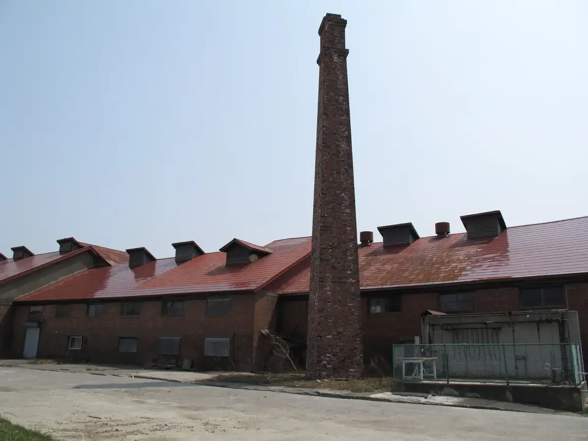
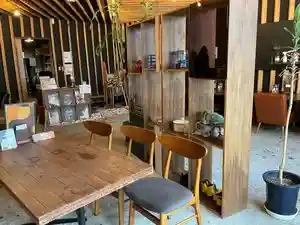
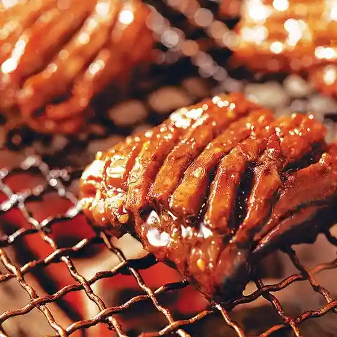
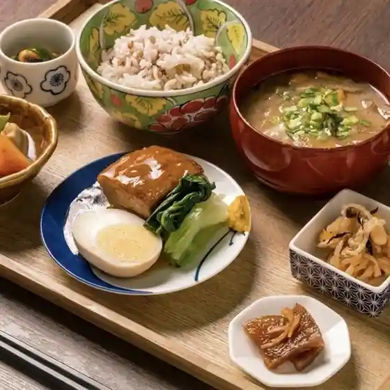
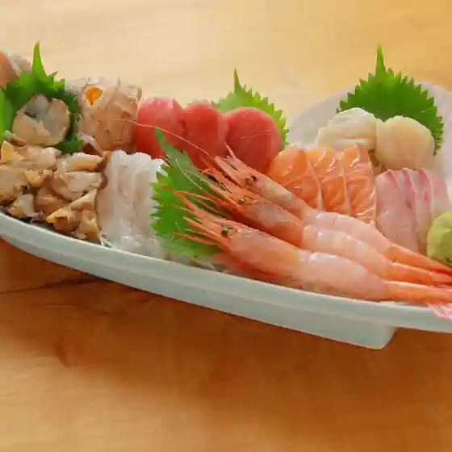
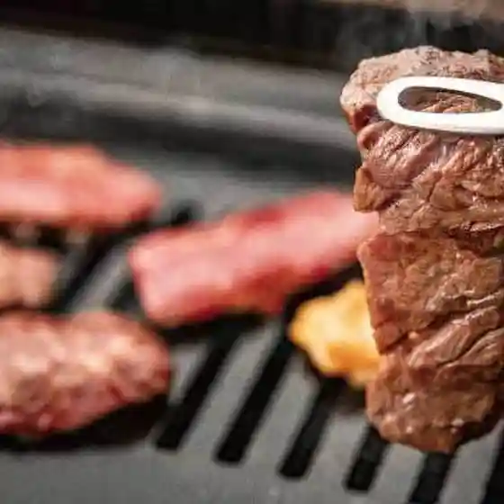
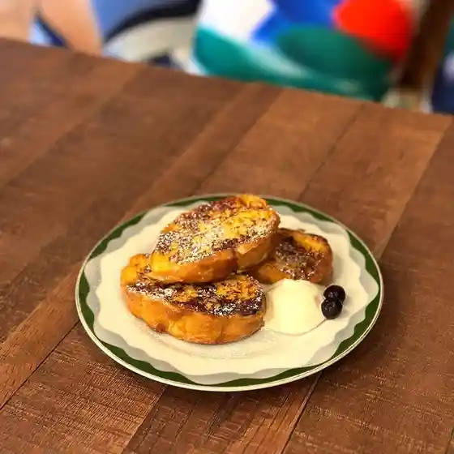
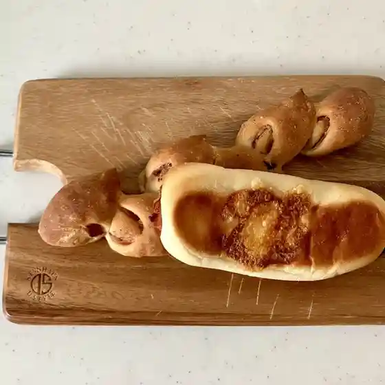

Ebetsu
Ebetsu · Hokkaido
Ebetsu
Highlighted on the Hokkaido map.

Stay
ホテルリボーン野幌
Hoteruriboon Nopporo
ゲニウス・ロキが旅をした

Geniusu Roki Ga Tabi Woshita
Dining
山の猿 江別店

Yama No Saru Ebetsu Mise
牛角 野幌店

Gyuukaku Nopporo Mise
しぶきや
Shibukiya
cafe＆bar 大麻

Cafe & Bar Taima
味の里 いろは

Aji No Sato Iroha
焼肉松柳苑

Yakiniku Matsu Yanagi En
ゲニウス・ロキが旅をした

Geniusu Roki Ga Tabi Woshita
ドルチェ&ベーカリーカフェ アマム

Doruche & Beekariikafe Amamu
らーめん しょう
Raamen Shou
ドラマシアターども
Doramashiataa Domo
セイコーマート こざわ店
Seikoomaato Kozawa Mise
コロポックル山荘
Koropokkuru Sansou
Cento per Cento 大麻店
Cento Per Cento Taima Mise
スーパーセンタートライアル 野幌店
Suupaasentaatoraiaru Nopporo Mise
カフェ＆居酒屋 ゆるり
Kafe & Izakaya Yururi
ほっともっと 江別白樺通り店
Hottomotto Ebetsu Shirakaba Touri Mise
焼酎屋 開拓酒場
Shouchuu Ya Kaitaku Sakaba
はるちゃんのトマトケチャップ工房
Haruchanno Tomatokechappu Koubou
やすらげBARHome
Yasurage Barhome
soup
Soup
ふじ園
Fuji Sono
Éclat douce
E Clat Douce
はやし
Hayashi
サカキミート
Sakakimiito